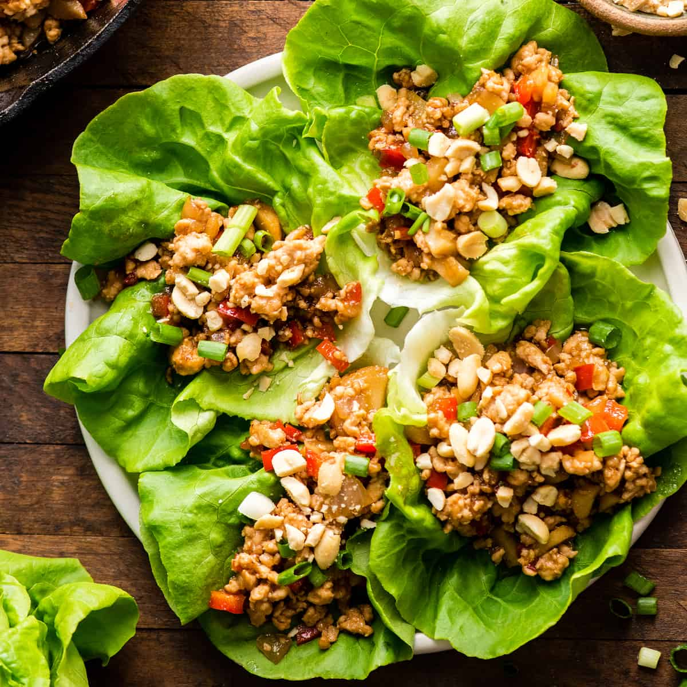

Chicken Lettuce Wraps

Asian Chicken Lettuce Wraps (better than P.F. Chang’s)! A quick (less than 30 minutes), easy, and healthy dinner that tastes delicious! Gluten and dairy-free!
I know that’s a pretty bold claim…Asian Chicken Lettuce Wraps you can make at home that are better than the beloved dish from P.F. Chang’s?! It may be bold, but it’s true! This Asian Chicken Lettuce Wraps recipe is one that took me years of trial and error, and lots of taste-testing, to get it just right.
These Asian Chicken Lettuce Wraps wraps are one of my favorite dinners (along with this cashew chicken stir fry). They are quick and easy and my whole family loves them. Even my kids eat them, and have tons of fun doing it!
Ingredients
- 1 lb ground chicken
- 1 TBS peanut oil
- ½ onion minced
- 1 cup red or green pepper diced
- 1 8 oz can water chestnuts drained and minced
- 3 TBS soy sauce*
- 3 TBS hoisin sauce**
- 1 TBS sesame oil
- 1 TBS rice vinegar
- 1 TBS peanut butter
- 1 TBS honey
- 2 tsp sweet chili sauce
- ½ tsp garlic powder
- ¼ tsp powdered ginger
- ¼ cup peanuts crushed.
- Lettuce or your favorite Asian salad
Instructions
- Whisk together sauce ingredients until well combined. If you use a firmer peanut butter you may need to microwave the mixture for 30-60 seconds in order to melt it and ensure everything is well-mixed.
- Heat 2 TBS peanut oil in a frying pan. Once hot, add ground chicken.
- Cook until some pieces are starting to brown. Add onion and cook for 5 minutes or until the onion is becoming translucent.
- Add the peppers and water chestnuts and cook about 5 minutes or until peppers are becoming soft.
- Add sauce and simmer on low heat until the chicken and veggies are evenly coated and everything is heated through.
- Serve in lettuce leaves, on top of your favorite Asian salad, or over noodles or rice!